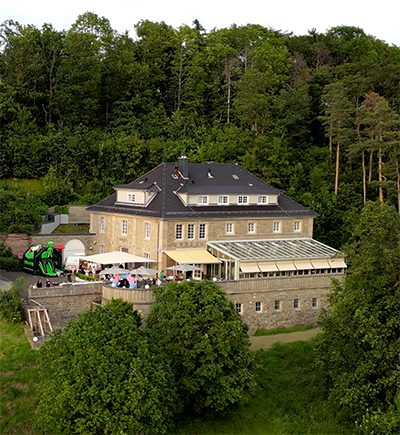
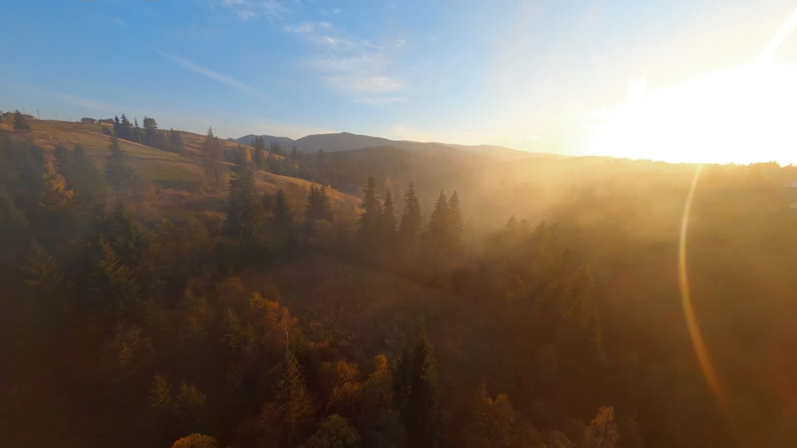

Ein Film, der Ihr Gesicht zeigt.
Wer Sie sind, lässt sich schwer in einer Broschüre erklären – in einem Film dagegen schnell erleben.
Ein Imagefilm zeigt Menschen, Räume und Abläufe und macht sichtbar, was Sie ausmacht.
x@motion produziert Imagefilme, die Haltung zeigen und nicht nur Fassaden filmen.

Was ist ein Imagefilm von x@motion?
Ein Imagefilm ist mehr als ein bebilderter Werbetext.
Er erzählt, wofür ein Unternehmen, eine Location oder eine Organisation steht – mit echten Bildern, passender Musik und einer klaren Dramaturgie.
Wir planen ihn gemeinsam mit Ihnen, drehen ihn mit abgestimmter Technik und liefern ihn in den Formaten, die Sie wirklich brauchen.

Mehrwert für Ihr Unternehmen
Vertrauen
Menschen und Räume, die man im Film kennenlernt, wirken nahbar. Das schafft Vertrauen, bevor das erste Gespräch beginnt.
Persönlichkeit
Ihr Film zeigt, wie Sie arbeiten, und nicht nur, was Sie anbieten.
Wiedererkennung
Bildsprache, Musik und Ton bleiben im Kopf und machen Sie unterscheidbar.
Vielseitigkeit
Ein Film lässt sich für Website, Social Media, Messe, Präsentation oder Empfang in passenden Formaten aufbereiten.
Wertigkeit
Ein hochwertig produzierter Film unterstreicht Ihren Anspruch und Ihre professionelle Arbeitsweise.
Ein Ansprechpartner
Von der ersten Idee bis zur Übergabe haben Sie eine feste Kontaktperson.
Imagefilme eignen sich besonders für:
Unternehmen
& BetriebeHotels & Locations
& GastgewerbeHandwerk
& DienstleisterKommunen
& öffentliche EinrichtungenWie läuft eine Imagefilm-Produktion ab?
Ein Imagefilm entsteht bei uns nach einem klaren Ablauf, damit am Ende sitzt, was Sie sich vorgestellt haben.
Konzept & Vorgespräch
- Klärung von Ziel, Zielgruppe und Einsatzort des Films
- Gemeinsame Entwicklung von Idee, Ablauf und Bildsprache
- Abstimmung von Terminen, Drehorten und Beteiligten
Dreharbeiten
- Ruhige, flexible Kamerabegleitung vor Ort
- Mehrkamera-Setups, Gimbal oder Drohne, wenn es zum Projekt passt
- Detailaufnahmen von Menschen, Räumen und Abläufen
Schnitt & Übergabe
- Auswahl und Strukturierung des Materials
- Schnitt, Farbkorrektur und abgestimmtes Sounddesign
- Übergabe in passenden Formaten für Web, Social Media oder Präsentation
Ein Beispiel für einen Imagefilm von x@motion:
›Berghotel Eisenach
- Ein Imagefilm, der einen kompletten Veranstaltungstag zeigt
- Mehrkamera-Setup, Drohnenaufnahmen und Detailshots
- Nutzbar für Website, Social Media und Präsentationen
»Imagefilm und mehr
- Imagefilm als Basis für mehrere Social-Media-Clips
- Kombination mit Luftaufnahmen für Lage und Umgebung
- Teil einer größeren Kampagne oder Jahreskommunikation
Alles aus einer Hand – technisch und gestalterisch abgestimmt.
Warum Imagefilme von x@motion?
- Konzept, Dreh und Schnitt aus einer Hand
- Ein fester Ansprechpartner von Planung bis Übergabe
- Persönliche, nahbare Bildsprache statt Stockfilm-Optik
- Klare Abstimmung vor dem Dreh
- Unaufdringliche Begleitung, auch im laufenden Betrieb
- Professionelle Technik und saubere Umsetzung
Kein Werbespot von der Stange. Sondern ein Film, der zu Ihnen passt!
Die wichtigsten Fragen
Nach einem Kennenlerngespräch entwickeln wir gemeinsam Idee und Ablauf. Danach folgen Dreh und Schnitt. Zwischen den Schritten stimmen wir uns mit Ihnen ab, damit Sie nicht erst am Ende überrascht werden.
Die Kosten hängen vom Aufwand ab – etwa von Länge, Anzahl der Drehtage, Drehorten, Technik und gewünschten Formaten. Nach einem kurzen Gespräch erstellen wir ein transparentes Angebot.
Nein. Es reicht, wenn Sie uns Ihr Ziel und Ihre Zielgruppe nennen. Konzept und Ablauf entwickeln wir gemeinsam mit Ihnen.
Typische Einsatzorte sind die eigene Website, Social-Media-Kanäle, Messen, Präsentationen oder Empfangsbereiche. Auf Wunsch liefern wir passende Formate, zum Beispiel einen kurzen Clip für Social Media.
Die Nutzung des Materials vereinbaren wir vorab klar mit Ihnen. So wissen Sie, wo und wie Sie den Film einsetzen dürfen.
Ihr Unternehmen. Ihr Film.
Was soll man über Sie sehen, bevor man Sie trifft?